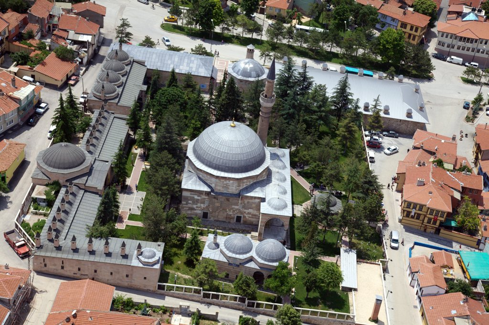

Yazılıkaya
Yazılıkaya , Phrygian Yazılıkaya, or Midas City is a village in
Eskişehir Province Turkey known for its Phrygian archaeological
remains and inscription mentioning Midas in Eskişehir Province Turkey
known for its Phrygian archaeological remains and inscription mentioning
Midas The ancient remains are sometimes called the Midas Monument or Midas
City and were formerly identified as the tomb of Midas
Odunpazarı

Odunpazarı, is a historic district of Eskişehir Province in the Central Anatolia
region of Turkey. Odunpazarı is one of the central districts of Eskişehir along
with the district of Tepebaşı.
Kurşunlu Mosque

Kurşunlu Mosque and Complex is a
16th-century Ottoman mosque and its social complex in Odunpazarı district of Eskişehir
The mosqe and the complex were commissioned by the Ottoman vizier Çoban Mustafa
Pasha, and were built between 1517 and 1525.